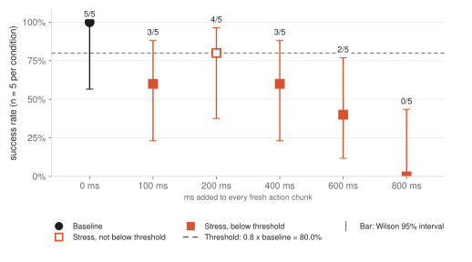
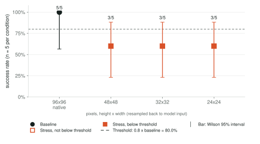
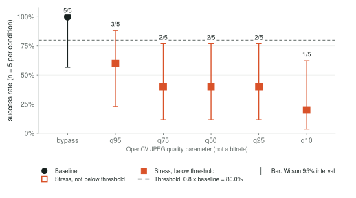

Diffusion Policy on PushT under stress
80 episode records, 5 paired episodes per condition, env seeds 6000 to 6004.
Summary
One pretrained Diffusion Policy (lerobot/diffusion_pusht at revision `202c8695947a458d8ce08ce1c0219f2588d60b33`) on PushT in simulation, run as PyTorch FP32 on CPU. Simulation only.
Exploratory run with 5 paired episodes per condition; not confirmed with fresh seeds.
- Baseline (PyTorch FP32, native image, 0 ms delay): 5/5 (100.0%; Wilson 95% 56.6% to 100.0%).
- Constant added delay: first tested point below threshold is 100 ms at 3/5 (interval includes threshold).
- Camera resolution: first tested point below threshold is 48x48 at 3/5 (interval includes threshold).
- JPEG quality: first tested point below threshold is q95 at 3/5 (interval includes threshold).
Validation, errors and caveats
- Errors: 0 runtime errors or policy failures in 80 episode records. Outcomes: 46 success, 34 time_limit_truncation.
- Baseline 5/5 (100.0%), above the 0.5 floor.
- Sample size: 5 paired episodes per condition. A grid point below the threshold is not an interpolated exact boundary.
- "Interval spans threshold" means the Wilson interval overlaps the threshold; that is an interval overlap, not a paired significance test. Conditions: Constant added delay: 100 ms, 200 ms, 400 ms; Camera resolution: 48x48, 32x32, 24x24; JPEG quality: q95.
- Resolution ordering: the saved summary stored the same ordered value for every resolution, so conditions are ordered by plan order (native, 240x320, 120x160, 60x80), which is mild to severe.
- Model card success is 65.4% over 500 episodes; this run's baseline is 5/5. Stated as context, not a reproduction.
- Delay is injected in simulated time; host generation time is not added.
- No ONNX, quantization, H.264 or device replay for this candidate (methodology).
15 simulated runs back 16 condition rows; the shared baseline is reused by reference.
Results by stress axis. Choose one:
Constant added delay
Stress variable: ms added to every fresh action chunk.

| Condition | Successes | Rate | Wilson 95% interval | Against threshold |
|---|---|---|---|---|
| 0 ms (baseline) | 5/5 | 100.0% | 56.6% to 100.0% | baseline |
| 100 ms | 3/5 | 60.0% | 23.1% to 88.2% | below (interval spans threshold) |
| 200 ms | 4/5 | 80.0% | 37.6% to 96.4% | not below (interval spans threshold) |
| 400 ms | 3/5 | 60.0% | 23.1% to 88.2% | below (interval spans threshold) |
| 600 ms | 2/5 | 40.0% | 11.8% to 76.9% | below |
| 800 ms | 0/5 | 0.0% | 0.0% to 43.4% | below |
First tested point below threshold: 100 ms (between 0 ms and 100 ms).
Paired outcomes by seed
| Condition | Paired with baseline seeds | Bootstrap interval |
|---|---|---|
0 ms (baseline)latency_ms_0 | reference | n/a |
100 mslatency_ms_100 | lost 2 · gained 0 · both succeeded 3 · neither 0 | -0.200 [-0.600, +0.200] |
200 mslatency_ms_200 | lost 1 · gained 0 · both succeeded 4 · neither 0 | +0.000 [-0.400, +0.200] |
400 mslatency_ms_400 | lost 2 · gained 0 · both succeeded 3 · neither 0 | -0.200 [-0.600, +0.200] |
600 mslatency_ms_600 | lost 3 · gained 0 · both succeeded 2 · neither 0 | -0.400 [-0.800, +0.000] |
800 mslatency_ms_800 | lost 5 · gained 0 · both succeeded 0 · neither 0 | -0.800 [-0.800, -0.800] |
| condition | 00 | 01 | 02 | 03 | 04 |
|---|---|---|---|---|---|
| 0 ms | ● | ● | ● | ● | ● |
| 100 ms | ▼ | ● | ● | ● | ▼ |
| 200 ms | ● | ● | ▼ | ● | ● |
| 400 ms | ▼ | ● | ● | ▼ | ● |
| 600 ms | ▼ | ▼ | ● | ▼ | ● |
| 800 ms | ▼ | ▼ | ▼ | ▼ | ▼ |
● success ○ no success (same as baseline) ▼ baseline succeeded, condition did not ▲ baseline did not succeed, condition did
Evidence and condition IDs
- Synthetic constant delay; precision held at pytorch_fp32.
- 0 ms:
latency_ms_0 - 100 ms:
latency_ms_100 - 200 ms:
latency_ms_200 - 400 ms:
latency_ms_400 - 600 ms:
latency_ms_600 - 800 ms:
latency_ms_800
Camera resolution
Stress variable: pixels, height x width (resampled back to model input).

| Condition | Successes | Rate | Wilson 95% interval | Against threshold |
|---|---|---|---|---|
| 96x96 native (baseline) | 5/5 | 100.0% | 56.6% to 100.0% | baseline |
| 48x48 | 3/5 | 60.0% | 23.1% to 88.2% | below (interval spans threshold) |
| 32x32 | 3/5 | 60.0% | 23.1% to 88.2% | below (interval spans threshold) |
| 24x24 | 3/5 | 60.0% | 23.1% to 88.2% | below (interval spans threshold) |
First tested point below threshold: 48x48 (between 480x640 native and 48x48).
Paired outcomes by seed
| Condition | Paired with baseline seeds | Bootstrap interval |
|---|---|---|
96x96 native (baseline)resolution_native | reference | n/a |
48x48resolution_capture_48x48 | lost 2 · gained 0 · both succeeded 3 · neither 0 | -0.200 [-0.600, +0.200] |
32x32resolution_capture_32x32 | lost 2 · gained 0 · both succeeded 3 · neither 0 | -0.200 [-0.600, +0.200] |
24x24resolution_capture_24x24 | lost 2 · gained 0 · both succeeded 3 · neither 0 | -0.200 [-0.600, +0.200] |
| condition | 00 | 01 | 02 | 03 | 04 |
|---|---|---|---|---|---|
| 96x96 native | ● | ● | ● | ● | ● |
| 48x48 | ▼ | ▼ | ● | ● | ● |
| 32x32 | ▼ | ● | ● | ● | ▼ |
| 24x24 | ▼ | ● | ● | ● | ▼ |
● success ○ no success (same as baseline) ▼ baseline succeeded, condition did not ▲ baseline did not succeed, condition did
Evidence and condition IDs
- Resolution axis only; latency and precision at defaults.
- 96x96 native:
resolution_native - 48x48:
resolution_capture_48x48 - 32x32:
resolution_capture_32x32 - 24x24:
resolution_capture_24x24
JPEG quality
Stress variable: OpenCV JPEG quality parameter (not a bitrate).

| Condition | Successes | Rate | Wilson 95% interval | Against threshold |
|---|---|---|---|---|
| bypass (baseline) | 5/5 | 100.0% | 56.6% to 100.0% | baseline |
| q95 | 3/5 | 60.0% | 23.1% to 88.2% | below (interval spans threshold) |
| q75 | 2/5 | 40.0% | 11.8% to 76.9% | below |
| q50 | 2/5 | 40.0% | 11.8% to 76.9% | below |
| q25 | 2/5 | 40.0% | 11.8% to 76.9% | below |
| q10 | 1/5 | 20.0% | 3.6% to 62.4% | below |
First tested point below threshold: q95 (between bypass and q95).
Paired outcomes by seed
| Condition | Paired with baseline seeds | Bootstrap interval |
|---|---|---|
bypass (baseline)jpeg_bypass | reference | n/a |
q95jpeg_q95 | lost 2 · gained 0 · both succeeded 3 · neither 0 | -0.200 [-0.600, +0.200] |
q75jpeg_q75 | lost 3 · gained 0 · both succeeded 2 · neither 0 | -0.400 [-0.800, +0.000] |
q50jpeg_q50 | lost 3 · gained 0 · both succeeded 2 · neither 0 | -0.400 [-0.800, +0.000] |
q25jpeg_q25 | lost 3 · gained 0 · both succeeded 2 · neither 0 | -0.400 [-0.800, +0.000] |
q10jpeg_q10 | lost 4 · gained 0 · both succeeded 1 · neither 0 | -0.600 [-0.800, -0.200] |
| condition | 00 | 01 | 02 | 03 | 04 |
|---|---|---|---|---|---|
| bypass | ● | ● | ● | ● | ● |
| q95 | ● | ● | ▼ | ▼ | ● |
| q75 | ● | ▼ | ▼ | ● | ▼ |
| q50 | ● | ● | ▼ | ▼ | ▼ |
| q25 | ▼ | ▼ | ● | ● | ▼ |
| q10 | ● | ▼ | ▼ | ▼ | ▼ |
● success ○ no success (same as baseline) ▼ baseline succeeded, condition did not ▲ baseline did not succeed, condition did
Evidence and condition IDs
- JPEG visual-quality axis only; native resolution.
- bypass:
jpeg_bypass - q95:
jpeg_q95 - q75:
jpeg_q75 - q50:
jpeg_q50 - q25:
jpeg_q25 - q10:
jpeg_q10
Action-generation timing
| Device | n | median | p95 | p99 | max |
|---|---|---|---|---|---|
| laptop-m3 | 50 | 13433.8 | 32554.3 | 48941.5 | 49842.4 |
The timed call covers one full generate_actions with all 100 denoising steps on cpu with 4 torch threads.
The measured median is 13433.8 ms; the largest tested delay is 800 ms and the control period is 100 ms.
These timings are not replayed into episodes.
Provenance
Model, runtime, and protocol identities
- Policy
diffusion_pusht- Checkpoint file hashes
8 files- PyTorch
- threads 4; simulation host device
cpu - Code revision at run time
1b5013adda1cd874d2a9c2ab450f511ecd54e7fc, working tree dirty=False (clean)- Chunk arrival
discard_stale; one inference in flight; delay applied once per fresh chunk on simulated time- Seeds
- env 6000 to 6004; policy RNG = env seed + 10000
- Statistics
- Wilson 95%; paired bootstrap seed 20261012, 2000 resamples, pointwise coverage; threshold ratio 0.8, baseline floor 0.5
Checks run by this report
| Result | Check | Detail |
|---|---|---|
| pass | Packaged files match the manifest digests | 45 files hashed |
| pass | Episode rows match planned seeds and success flags | 80 rows |
| pass | No runtime errors or policy failures in any episode | outcomes: success, time_limit_truncation |
| pass | Every axis lists each planned condition once | 16 condition rows |
| pass | v0.1_full_latency saved summary matches episode records | 6 conditions |
| pass | v0.1_full_resolution saved summary matches episode records | 4 conditions |
| pass | v0.1_full_jpeg saved summary matches episode records | 6 conditions |
| pass | Shared baseline outcomes match latency_ms_0 seed by seed | 10 referenced rows; differing: [] |
| pass | Latency axis recorded delay matches the condition label | all episodes |
| pass | Upstream agreement passed on 5 seeds with bitwise-equal actions and rerun determinism | passed=True; determinism=True |
| pass | Every episode row candidate equals the lock candidate (no pooling) | candidate=diffusion_pusht |
| pass | Timing profile checkpoint hashes equal the lock checkpoint hashes | ok |
Large evidence kept outside the repository
Not packaged. The raw control-step logs stay in the local run directory; the SHA-256 values identify them.
| Path | Bytes | Role | sha256 |
|---|---|---|---|
outputs/diffusion-pusht/full/axes/v0.1_full_latency/conditions/latency_ms_0/run_report.json | 839,532 | canonical_control_step_log | ce42379049c6f914… |
outputs/diffusion-pusht/full/axes/v0.1_full_latency/conditions/latency_ms_0/episodes.jsonl | 545,507 | duplicate_of_run_report_episodes | 660a3852f603b076… |
outputs/diffusion-pusht/full/axes/v0.1_full_latency/conditions/latency_ms_100/run_report.json | 1,442,638 | canonical_control_step_log | f0e5df1ba840e718… |
outputs/diffusion-pusht/full/axes/v0.1_full_latency/conditions/latency_ms_100/episodes.jsonl | 940,066 | duplicate_of_run_report_episodes | 011430fda90caafa… |
outputs/diffusion-pusht/full/axes/v0.1_full_latency/conditions/latency_ms_200/run_report.json | 977,591 | canonical_control_step_log | 00f6be53bfea7929… |
outputs/diffusion-pusht/full/axes/v0.1_full_latency/conditions/latency_ms_200/episodes.jsonl | 634,372 | duplicate_of_run_report_episodes | f8a5149beeedf8c2… |
outputs/diffusion-pusht/full/axes/v0.1_full_latency/conditions/latency_ms_400/run_report.json | 1,236,680 | canonical_control_step_log | d6d817244b878694… |
outputs/diffusion-pusht/full/axes/v0.1_full_latency/conditions/latency_ms_400/episodes.jsonl | 800,332 | duplicate_of_run_report_episodes | df22bbf0fcb098bf… |
outputs/diffusion-pusht/full/axes/v0.1_full_latency/conditions/latency_ms_600/run_report.json | 1,487,949 | canonical_control_step_log | f8fbe681bcf8b62f… |
outputs/diffusion-pusht/full/axes/v0.1_full_latency/conditions/latency_ms_600/episodes.jsonl | 959,103 | duplicate_of_run_report_episodes | 9dc1b35ebd913f6e… |
outputs/diffusion-pusht/full/axes/v0.1_full_latency/conditions/latency_ms_800/run_report.json | 1,580,630 | canonical_control_step_log | 78f5d6874a5dc30e… |
outputs/diffusion-pusht/full/axes/v0.1_full_latency/conditions/latency_ms_800/episodes.jsonl | 1,001,732 | duplicate_of_run_report_episodes | 546bb206bec569c8… |
outputs/diffusion-pusht/full/shared_baselines/default_fp32_native_L0/run_report.json | 839,532 | canonical_control_step_log | ce42379049c6f914… |
outputs/diffusion-pusht/full/axes/v0.1_full_resolution/conditions/resolution_capture_48x48/run_report.json | 1,268,370 | canonical_control_step_log | 3153d1c49b9272b8… |
outputs/diffusion-pusht/full/axes/v0.1_full_resolution/conditions/resolution_capture_48x48/episodes.jsonl | 826,850 | duplicate_of_run_report_episodes | 6580283342e65756… |
outputs/diffusion-pusht/full/axes/v0.1_full_resolution/conditions/resolution_capture_32x32/run_report.json | 1,219,386 | canonical_control_step_log | 0a0934383d85a664… |
outputs/diffusion-pusht/full/axes/v0.1_full_resolution/conditions/resolution_capture_32x32/episodes.jsonl | 794,042 | duplicate_of_run_report_episodes | fdc58b5a6df695b7… |
outputs/diffusion-pusht/full/axes/v0.1_full_resolution/conditions/resolution_capture_24x24/run_report.json | 1,216,234 | canonical_control_step_log | 9d0cfb207da2092b… |
outputs/diffusion-pusht/full/axes/v0.1_full_resolution/conditions/resolution_capture_24x24/episodes.jsonl | 792,550 | duplicate_of_run_report_episodes | acc41744f8d22a43… |
outputs/diffusion-pusht/full/axes/v0.1_full_jpeg/conditions/jpeg_q95/run_report.json | 1,223,201 | canonical_control_step_log | 647b3d3f64527a9e… |
outputs/diffusion-pusht/full/axes/v0.1_full_jpeg/conditions/jpeg_q95/episodes.jsonl | 797,569 | duplicate_of_run_report_episodes | 18fbce41bb90db81… |
outputs/diffusion-pusht/full/axes/v0.1_full_jpeg/conditions/jpeg_q75/run_report.json | 1,435,373 | canonical_control_step_log | ec5505babd61277d… |
outputs/diffusion-pusht/full/axes/v0.1_full_jpeg/conditions/jpeg_q75/episodes.jsonl | 936,835 | duplicate_of_run_report_episodes | 9996ba8c682a73d2… |
outputs/diffusion-pusht/full/axes/v0.1_full_jpeg/conditions/jpeg_q50/run_report.json | 1,440,541 | canonical_control_step_log | 3e30dbcb4b8b622e… |
outputs/diffusion-pusht/full/axes/v0.1_full_jpeg/conditions/jpeg_q50/episodes.jsonl | 940,213 | duplicate_of_run_report_episodes | 9df23c65d80d4547… |
outputs/diffusion-pusht/full/axes/v0.1_full_jpeg/conditions/jpeg_q25/run_report.json | 1,403,122 | canonical_control_step_log | e42f69901177049c… |
outputs/diffusion-pusht/full/axes/v0.1_full_jpeg/conditions/jpeg_q25/episodes.jsonl | 915,520 | duplicate_of_run_report_episodes | dddf6ba970b540ef… |
outputs/diffusion-pusht/full/axes/v0.1_full_jpeg/conditions/jpeg_q10/run_report.json | 1,564,254 | canonical_control_step_log | 8a6185dc1c8cb3b8… |
outputs/diffusion-pusht/full/axes/v0.1_full_jpeg/conditions/jpeg_q10/episodes.jsonl | 1,021,126 | duplicate_of_run_report_episodes | 44aebf7eaa7e7388… |
profiles/laptop-m3/diffusion_pusht/diffusion_pusht__pytorch_fp32__laptop-m3__full_denoise.npz | 649 | duplicate_of_timing_profile_samples | bb9ccae2c8634ffe… |
Historical paths
The verbatim protocol, summary, and provenance files keep the absolute paths of the machine that produced them. Links in this report are relative.